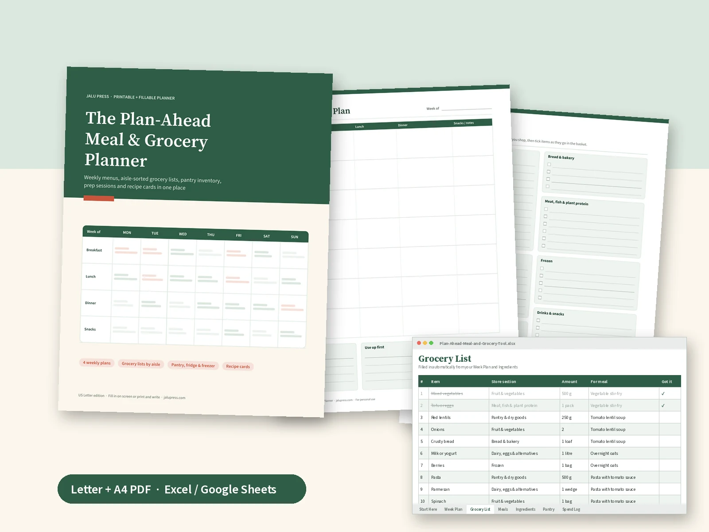

Decide once a week, not every evening
The question "what's for dinner?" is easier to answer on a quiet Sunday than at six o'clock on a busy Tuesday. This planner turns it into a short weekly routine: check what you already have, choose the week's meals, write one grocery list, and shop once.
Start by filling in a few setup pages: who you cook for and what they love or avoid, which nights are busy, a handful of theme nights, and a bank of go-to meals your household already enjoys. After that, planning a week is mostly picking from your own list.
Every weekly plan has space for breakfast, lunch, dinner and snacks, a busy-night tick for each day, and boxes for what to prep ahead, what to use up first and how to handle leftovers. The facing grocery list is grouped by store section, so you walk each aisle once.
A spreadsheet that writes the grocery list
The companion spreadsheet works in Microsoft Excel and Google Sheets. List your meals and their ingredients once, mark what you usually keep in stock, then choose the week's meals from drop-down lists. Every ingredient you need and don't have appears on the Grocery List tab, with its store section and the meal it is for.
There is also a pantry stock count that flags items to restock, and a simple spend log with weekly and monthly totals in any currency.
What's included
- PDFMeal & Grocery Planner, US Letter23 fillable pages, 8.5 × 11 in
- PDFMeal & Grocery Planner, A423 fillable pages, 210 × 297 mm, same content
- XLSXMeal & grocery toolWeek plan, self-building grocery list, meals and ingredients, pantry, spend log (Excel or Google Sheets)
- PDFRead me firstHow to fill in, print and use the spreadsheet
Delivered together as one ZIP download.
Inside the planner
- Start here: a five-step weekly routine and printing tips
- Set up: our household, theme nights and meal ideas, go-to meals bank
- Inventory: pantry staples checklist, fridge and freezer log
- Weeks 1 to 4: weekly meal plan with busy-night markers, prep, use-up and leftovers boxes, plus a grocery list by store section
- Overview: monthly dinner calendar
- Cook: prep session planner, use-it-up and leftovers tracker, four recipe cards
- Track & reference: grocery spend log, kitchen conversions, notes
Good for
- Busy households that want fewer last-minute dinner decisions
- Anyone trying to waste less food and make fewer trips to the store
- Families who batch-cook or prep lunches ahead
- People who like paper planning, spreadsheets, or both
Details
| Format | Fillable PDF (2 sizes), XLSX spreadsheet, read-me PDF |
|---|---|
| Pages | 23 per PDF, 1,200+ fillable fields, 400+ check boxes |
| Works in | Adobe Acrobat Reader (free), Apple Preview and other form-capable PDF readers; Excel or Google Sheets |
| Printing | Color or black and white, home-printer margins |
| Language | English |
| Price | $9, paid as 9 USDC (Solana or Polygon) or 9 USDT (TRC20 or Polygon) |
| License | Personal and household use. Print as many copies as your household needs. Please do not resell or share the files. |
Please note
- This planner is an organizing tool for personal use. It is not nutrition, dietary, medical or financial advice.
- It contains no meal plans for medical conditions or special diets. For allergies or special diets, read food labels yourself and follow the advice of your own doctor or dietitian.
- Kitchen conversions are rounded for everyday cooking.
- The example meals in the spreadsheet are placeholders to show how it works; replace them with your own.